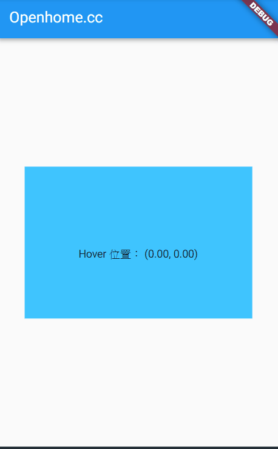

手機或平版裝置，以螢幕觸控操作為主，必要時也可以接上滑鼠或鍵盤，這時就像個筆電了，接上滑鼠後，基本上就是用滑鼠來代替手指的觸碰就是了，對於這部份的事件，基本上使用 Listener 來處理，接上滑鼠後出現的滑鼠游標，代表的只是手指懸空的位置。
Flutter 的野心不只是在手機或平版裝置，也想要涵蓋 Web 與桌面應用，而這時我們熟悉的操作裝置之一就是滑鼠，在 Web 與桌面應用上，能處理滑鼠游標進入、離開或懸停事件，Flutter 自然也要能處理這類事件。
在過去，Listener 上有 onPointerEnter、onPointerExit、onPointerHover，可以分別處理滑鼠游標進入、離開或懸停事件，現在這三個特性被廢棄了，改由 MouseRegion 負責，如果你真的還是在 Listener 上設定這三個特性，Listener 只是建立一個 MouseRegion 傳回罷了：
class Listener extends StatelessWidget {
@override
Widget build(BuildContext context) {
Widget result = _child;
if (onPointerEnter != null ||
onPointerExit != null ||
onPointerHover != null) {
result = MouseRegion(
onEnter: onPointerEnter,
onExit: onPointerExit,
onHover: onPointerHover,
opaque: false,
child: result,
);
}
...略
}
}
這邊也可以看到，MouseRegion 可以處理的事件有：
onEnteronExitonHover
來個簡單的示範：
import 'package:flutter/gestures.dart';
import 'package:flutter/material.dart';
void main() => runApp(MyApp());
class MyApp extends StatelessWidget {
@override
Widget build(BuildContext context) {
return MaterialApp(
home: Scaffold(
appBar: AppBar(title: Text('Openhome.cc')),
body: Center(
child: MyStatefulWidget(),
),
),
);
}
}
class MyStatefulWidget extends StatefulWidget {
MyStatefulWidget({Key key}) : super(key: key);
@override
_MyStatefulWidgetState createState() => _MyStatefulWidgetState();
}
class _MyStatefulWidgetState extends State<MyStatefulWidget> {
String desc = '';
double x = 0.0;
double y = 0.0;
void _Enter(PointerEnterEvent details) {
setState(() {
desc = '滑鼠進入';
});
}
void _Exit(PointerExitEvent details) {
setState(() {
desc = '滑鼠離開';
});
}
void _Hover(PointerHoverEvent details) {
setState(() {
x = details.position.dx;
y = details.position.dy;
});
}
@override
Widget build(BuildContext context) {
return ConstrainedBox(
constraints: BoxConstraints.tight(Size(300.0, 200.0)),
child: MouseRegion(
onEnter: _Enter,
onHover: _Hover,
onExit: _Exit,
child: Container(
color: Colors.lightBlueAccent,
child: Column(
mainAxisAlignment: MainAxisAlignment.center,
children: [
Text(desc,
style: Theme.of(context).textTheme.headline,
),
Text('Hover 位置： (${x.toStringAsFixed(2)}, ${y.toStringAsFixed(2)})'),
],
),
),
),
);
}
}
將這個範例貼到 DartPad，按下「Run」就可以進行操作了：

如果在 Android Studio 中使用模擬器，目前我測試是沒有作用的，不知道放到實機接上滑鼠會不會有作用，有興趣就自己試試吧！